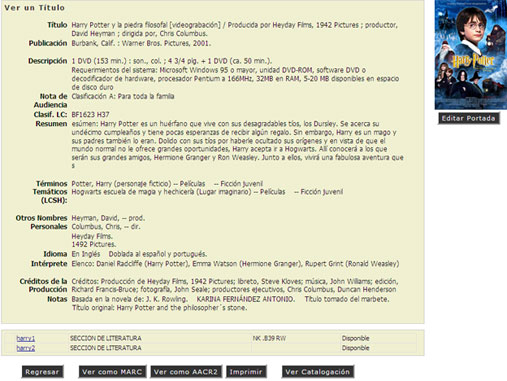

1.6. Consulta al Catálogo de Títulos.
En esta opción el Administrador del Sistema podrá realizar una Consulta Admnistrativa por el Pabras Clave, Título, etc.
REQUISITO: Para Realizar una Consulta, el usuario deberá contar con los susficientes privilegios.
- Escribir las Palabras Claves del Material en Busqueda.
- Seleccionar la opción por la cual se va a Realizar la Busqueda.
- Palabra Clave.
- Título.
- Autor.
- Materias.
- Signatura Topográfica.
- I.S.B
- Hacer "Clic" la opción [Buscar].
- El Sistema mostrará una lista de Resultados del Material Consultado.
- Si se desea ver las características de un Material, hacer "clic" en el Título del Material deseado.
- El sistema mostrará todas las caracteristicas, opciones, comentarios y copias que se tienen del Material seleccionado.
- Si se desea elegir una opción o vista que se muestra, hacer "clic" en la opción deseada.
- Si se desea cambiar o agregar la portada y la contraportada del Material, hacer "clic" en la opción [Editar ] o [Agregar Portada].
- Hacer "Clic" en el botón Examinar, seleccionar el archivo o la ruta de acceso de la imagen de la Portada del material. (NOTA: Se puede agregar tanto la Portada como la Contraportada)
- Ya que el archivo o ruta fue seleccionada, hacer "clic" en la opción [Subir Imagen].
- Hacer "Clic" en la opción [Cerrar Ventana].
